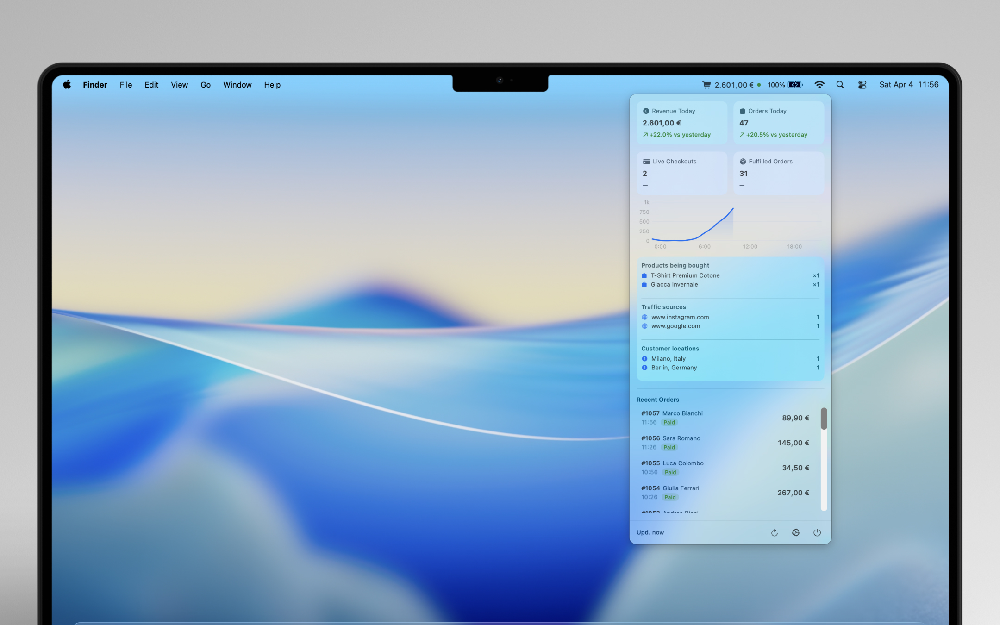
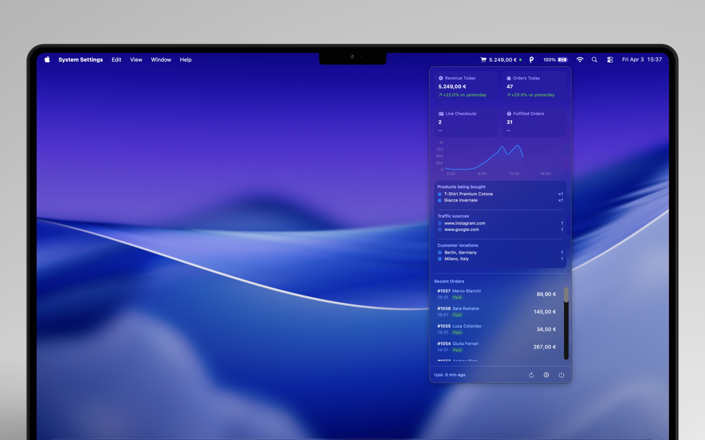
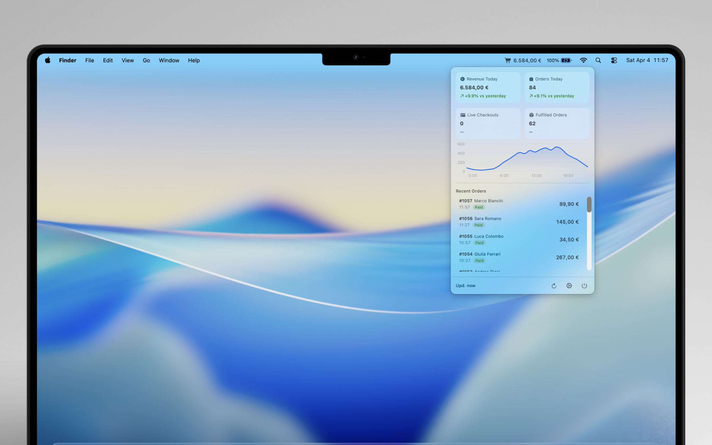
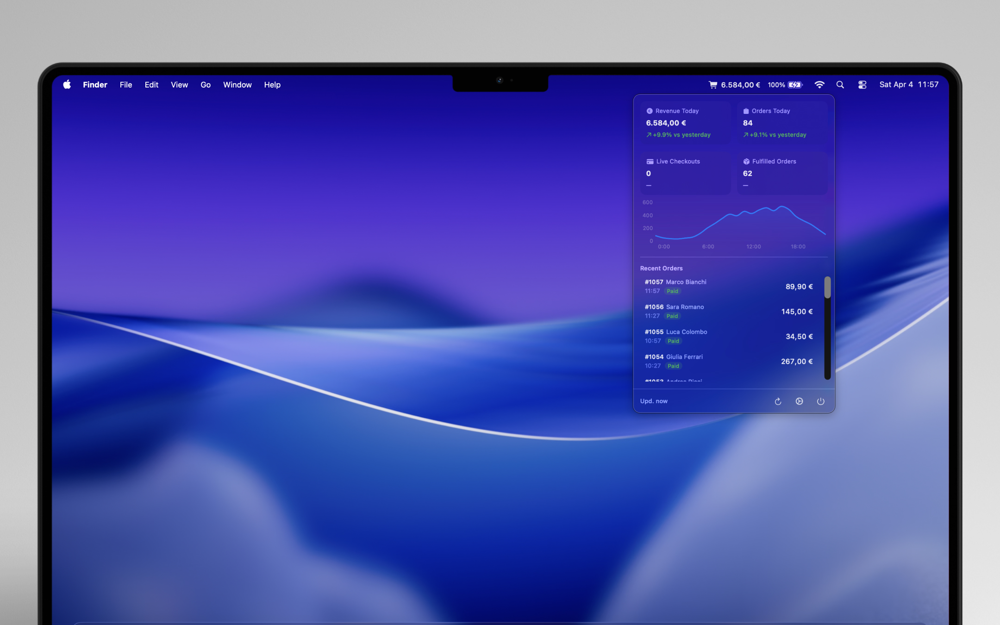

See the Shopify checkouts in progress
Shopify's Live View tells you how many shoppers are checking out. Tally shows you each one: what's in the cart, what it's worth, where it's shipping, and which site sent the shopper — while the checkout is still open.
| Checkout data | Shopify admin | Tally |
|---|---|---|
| Shoppers in checkout right now | A count in Live View | Every checkout, listed live |
| Products and cart value of an open checkout | Not listed while it's in progress | Shown as the checkout starts and updates |
| Shipping city and country | Not listed while it's in progress | Per checkout, plus top locations |
| Traffic source of each checkout | Not listed while it's in progress | Per checkout, plus top sources |
| Checkout completed | Appears as a new order | Drops off the live list the moment it converts |
How it works: Tally subscribes to Shopify's official checkouts/create and checkouts/update webhooks — events Shopify sends only to apps — and turns them into a live feed on your Mac, refreshed every few seconds. Your conversion funnel (sessions → added to cart → reached checkout → completed) comes from Shopify Analytics, pinned where you can actually see it.
Shopify Sales Monitoring Features
Revenue today
See today's total revenue with a comparison to yesterday at the same time.
Order count
Track how many orders have come in today and how you're trending.
Live revenue chart
An hourly breakdown of your sales throughout the day.
Live checkout tracking
Every checkout in progress — products, cart value, traffic source, and location — updated within seconds.
Conversion funnel
Sessions → added to cart → reached checkout → completed, so you see where shoppers drop off.
Abandoned carts
Today's abandoned checkouts at a glance, and optionally as a counter in your menu bar.
Order notifications
Get a notification with sound every time a new order comes in.
Fulfilled orders
Keep track of how many orders have been shipped today.


Built for your Mac
Tally is a native macOS app — fast, lightweight, and private. Read-only access to your Shopify orders and analytics. Your access token is stored securely in the macOS Keychain. We never sell or share your data.
Pricing
Free
Up to 50 orders/month
Everything you need to monitor your store. No credit card required.
Pro
$4.99/month · or $49.99/year (save 17%)
14-day free trial
Unlimited orders for growing stores. All features included.
Get started
- Download Tally from the Mac App Store
- Open it from your menu bar
- Enter your store URL and connect
- Your dashboard is ready in seconds
Frequently Asked Questions
Can I see who is checking out on my Shopify store right now?
Yes. Tally lists every checkout in progress on your Shopify store in real time, with the products in the cart, the cart value, the shipping city and country, and the traffic source. A checkout disappears from the list as soon as it becomes an order.
Does Shopify show checkouts that are still in progress?
Shopify's Live View shows how many visitors are currently in checkout, but not the details of each one. Tally receives Shopify's checkout webhooks, which are only available to apps, and shows each open checkout with its products, value, location and referrer.
What data does Tally access from my Shopify store?
Tally uses read-only access to your orders, reports, and analytics. It cannot modify your store, products, or customer data.
Is Tally free?
Yes, Tally is free for stores with up to 50 orders per month. The Pro plan ($4.99/month) removes this limit with a 14-day free trial.
Does Tally work with any Shopify store?
Yes, Tally works with all Shopify plans. You just need macOS 14 (Sonoma) or later.
Is my data private?
Tally reads your orders and analytics directly from the Shopify API. Live checkout events pass through Tally's server and are deleted automatically after 24 hours. Your data is never sold or shared with third parties.